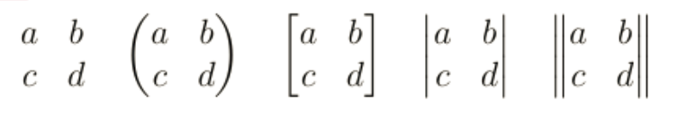

This post collects mathematics-related commands commonly used in my writing for convenience.
Mathematical terms
Numbered ones
1 | % it restart the post counter at every new section. |
Usage
1 | \begin{thrm}[title] |
Unnumbered ones
1 | \newtheorem*{remark}{Remark} |
Proofs
1 | \usepackage{amsthm} |
Math operators
1 | \DeclareMathOperator*{\argmin}{arg\,min} |
Math expresssions
Equation with multiple lines and large brace
1 | \begin{equation} |
Matrix in text
1 | % a, b in the first row, c, d the second. |
Results
